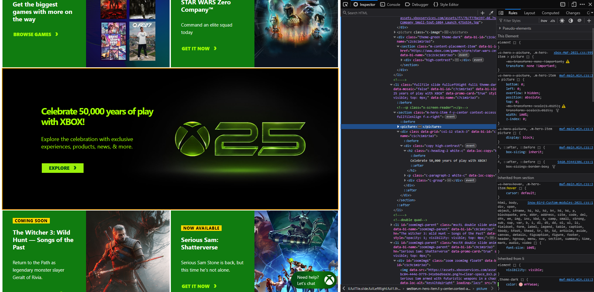

My Dev Tools Vandalism
I used browser developer tools to temporarily "vandalize" a website. Below is a screenshot showing my changes. These edits only appeared on my computer and did not affect the actual website.

What I "Vandalized"
I made very small, but very ugly, changes to the XBOX.com site to make my changes really stand out compared to the original site:
- I edited the main header, previously "Celebrate 25 years of play with XBOX", to "Celebrate 50,000 years of play with XBOX!" since I thought exaggerating the years would be a little ridiculous
- I modified the font size of the ".c heading-2" class from 34px to 53px
- I also changed the color of the main text and sub text, from a #ffffff white to vibrant #a3ff00 green